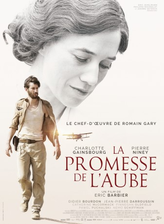

#11386 Frühes Versprechen
 
 IMDB-Wertung: 7.2 / 10
IMDB-Wertung: 7.2 / 10  Metascore: 0
Metascore: 0 
From his childhood in Poland to his adolescence in Nice to his years as a student in Paris and his tough training as a pilot during World War II, this tragi-comedy tells the romantic story of Romain Gary, one of the most famous French novelists and sole writer to have won the Goncourt Prize for French literature two times.
Jahr: 2017
Dauer: 125 Minuten
FSK:
Land: Frankreich Studio: Camino FilmverleihTonspuren:
Untertitel: Deutsch,
Auflösung: 1080p (1920x808) Größe: 5324 MB
Genre: Drama, Liebe, Biographie
Regisseur: Eric Barbier
Drehbuch: Eric Barbier, Marie Eynard, Romain Gary
Soundtrack:
Darsteller:
 Pierre Niney als Roman Kacew, dit Romain Gary
Pierre Niney als Roman Kacew, dit Romain Gary Charlotte Gainsbourg als Nina Kacew
Charlotte Gainsbourg als Nina Kacew Didier Bourdon als
Didier Bourdon als  Jean-Pierre Darroussin als
Jean-Pierre Darroussin als  Catherine McCormack als
Catherine McCormack als  Finnegan Oldfield als
Finnegan Oldfield als - Zoe Boyle als
- Alberto Maneiro als
- Preciado Rodriguez als
- Marta Klubowicz als
- Piotr Cyrwus als
- Toussaint Colombani als
- Michel Schillaci als
- Manda Touré als
- André Nerman als
- Beatrice Zentai als
- Pawel Puchalski als
- Némo Schiffman als
- Lou Chauvain als
- Emiliano Suarez als
- Katarzyna Skarzanka als
- Jakub Oniszk als
- Klaudia Trafalska als
- Hubert Ziulkowski als
- Mathieu Pageot als
- Pawel Kugel als
- Mateusz Kaminski als
- Marek Giwojno als
- Xavier Schliwanski als
- Béla Fesztbaum als
- György Kozma als
- Florá Kovács als
- Tímea Kása als
- Iwona Druckoczy als
- Marcella Andruskó als
- Danuta Ewa Missig als
- Ferenc Varga als
- Stanislas Gaczol als
- Éva Ligeti als
- Péter Babos als
- Nóra Palcsó als
- Zsigmond Lázár als
- Gergely Farkas als
- Lili Rónai als
- Rozi Békés als
- Mandula Kunert als
- Dávid Nagy Molnár als
- Sándor Kalla als
- Janusz R. Kowalczyk als
- Christian Ameri als
Datei: X:\2017(A-F)\Frühes Versprechen (2017, FSK, 1920x808).mkv seit 26.06.2019
Festplatte: HD 2017(A-Z)-2018(A-F)
 Es gibt insgesamt 152 Filme in der Gruppe '2017(A-F)'
Es gibt insgesamt 152 Filme in der Gruppe '2017(A-F)'